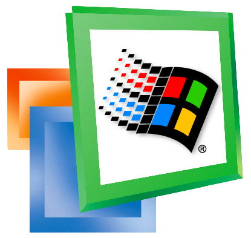

O que é o Windows?
Microsoft Windows é uma família de sistemas operacionais desenvolvidos, comercializados e vendidos pela Microsoft. É constituída por várias famílias de sistemas operacionais, cada qual atendendo a um determinado setor da indústria da computação. As famílias ativas do Windows incluem Windows NT (Servidores e workstations), Windows Embedded (Sistemas embarcados) e Windows Phone (Dispositivos móveis).
A Evolução do Windows
MS DOS (1981) |
|
Windows 1.0 (1985) |
|
Windows 95 (1995) |
|
Windows ME (2000) |
 |
Windows XP (2001) |
|
Windows Vista (2007) |
|
Windows 7 (2009) |
|
Windows 8 (2012) |
|
 |
Windows 10 (2015) |
Windows 11 (2021) |
 |